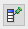

Contents |
What
The SQL result view displays the results of any SELECT query you execute using the SQL execute view in the database perspective (see Writing and executing SQL queries).
How
Using the SQL Result View
- The results of your query will be displayed in a grid, with columns for each of the columns returned in your query, and rows for each of the rows in your result set. Alternating rows are highlighted a soft light blue. An additional column on the left represents the row number of a given row in this result set.
- You can sort the results of your query using the column headers. Click a column header to select that column for sorting. Clicking again on the column header will toggle the sort direction. An arrow indicates the sort direction, ascending or descending.
- You can edit the individual rows in your result set. Clicking on a given column in a given row will highlight the row, and activate the column for editing. See editing rows below for details.
Features of the SQL Result View
Where Clause
If you have activated the SQL result view using the first method described above, you can search within your result using the Where input box. Type a valid SQL WHERE clause into this field and click the Search button to the right .
{kind=link}
Filtering
{kind=link}
Pin Column Widths
 Clicking the Pin Column Widths icon will fix the widths of columns in the SQL query results display.
{kind=link}
Editing Rows
{kind=link}
Displaying the SQL Result View
If you have not already switched to the database perspective, click the database button in the upper right corner of your workbench.
{kind=link}
You will also need to have set up a connection to a database to execute an SQL query against it (see Exploring your databases).
The SQL result view is not displayed as one of the default views of the database perspective. There are two ways to activate this view.
- Use the DB tree view to drill down to a database, then a table, then either the TABLE or VIEW folders. Double clicking on a table or view will activate the SQL result view and display the contents (see Exploring your databases for details).
- Write and execute a SELECT query in the SQL execute view. Once you have written and executed a SELECT query, the SQL result view will appear above the SQL execute view, in the top area of the Aptana Studio workspace (see Writing and executing SQL queries for details).
Each result set will be displayed in the SQL result view with it's own tab.